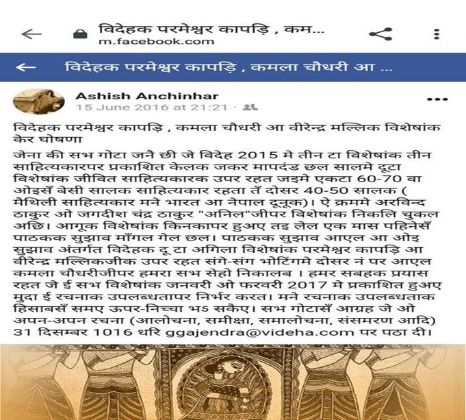
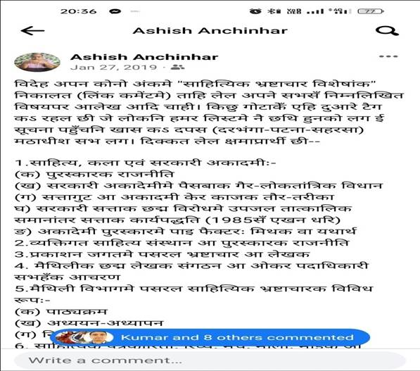
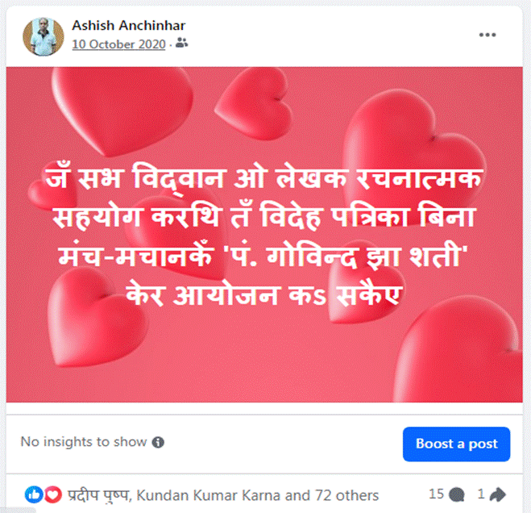
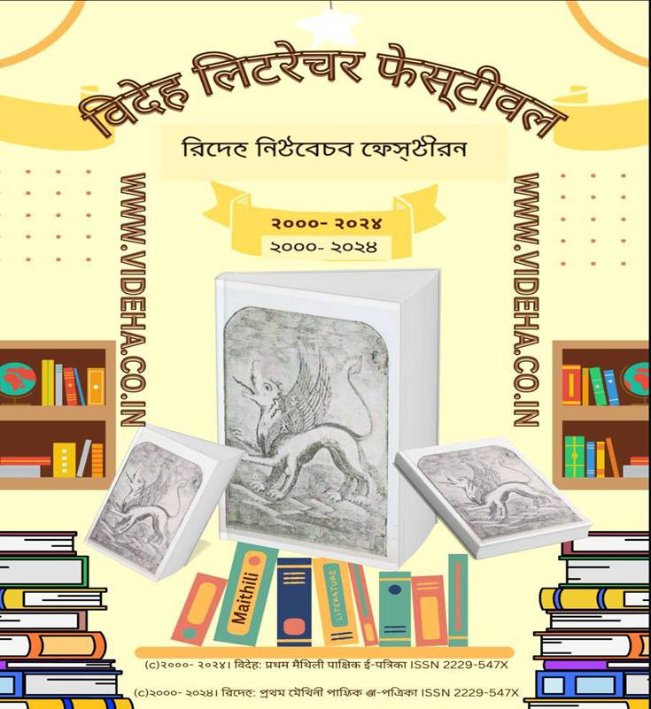

विदेह प्रथम मैथिली पाक्षिक ई पत्रिका
रमानन्द झा ’रमण’ विशेषांकक संदर्भमे
एहि ठाम विदेह विशेषांक केर इतिहास, चयन प्रक्रिया, वर्तमान विशेषांक केर प्रारूप, प्रकाशित विशेषांक केर सूची, ओ घोषणा जकरा हम सभ पूरा नहि कऽ सकलहुँ तकर सूची, विदेहक विशेषांक, सामान्य अंक अथवा विदेहसँ संबंधित कोनो PDF पढ़बाक सही तरीका संगे विशेषांक एवं घोषणासँ जुड़ल छोट-छोट सूचना पाठक लग दैत छी।
1
2008 सँ एखन धरि विदेह https://videha.co.in/ द्वारा जे विशेषांक सभ आएल अछि तकरा तीन चरणमे बाँटि सकैत छी।
पहिल चरण 2008सँ जनवरी 2015 धरि जाहिमे विषय आधारित विशेषांक सभ प्रकाशित भेल आ मधुपजीपर सेहो विशेषांक प्रकाशित भेल। एकदम प्रारंभिक विशेषांक सभमे "विशेषांक" नाम नहि लीखल गेल छै मुदा ओहिमे ओहन रचनाक बेसी स्थान देल गेल छै सायास रूपें (क्रम-1 सँ 12 केर अधिकांश)।
दोसर चरण भेल फरवरी 2015 सँ लऽ कऽ एखन धरि जाहिमे मात्र जीवित लेखकपर विशेषांक प्रकाशित करबाक निर्णय लेल गेल आ इम्हर पछिला बर्ख एहिमे संस्था आ पत्र-पत्रिकापर विशेषांक प्रकाशित करबाक सेहो निर्णय लेल गेल (क्रम-13, 14 एवं 20 सँ लऽ एखन धरिक 38म प्रस्तुत विशेषांक)। जीवैत लेखकपर विशेषांक विभिन्न नामसँ होइत आब "विदेहक जीवित मैथिलकर्मी, संगीतकर्मी, साहित्यकार-सम्पादक आ रंगमंचकर्मी-रंगमंच-निर्देशकपर विशेषांक शृंखला" नामसँ जानल जाइत अछि। मैथिलकर्मीसँ हमर सभहक आशय जिनकर काज मिथिला-मैथिली-मैथिली लेल कोनो माध्यमसँ भेल हो। ओ संगठनकर्ता सेहो भऽ सकै छथि, आन भाषाक लेखक सेहो। तहिना संगीतकर्मी मने गीत-संगीतसँ जुड़ल लोक।
तेसर चरण भेल विदेहक संपादक द्वारा "नित नवल सिरीज" प्रकाशित करबाक (विवरण आगू देल गेल अछि)।
विदेह विशेषांकमे औसत दसे टा (10 टा) आलोचना-समीक्षा मानि लेल जाए तऽ 38 टा विशेषांकमे 380 आलोचना-समीक्षा भेल। संगहि एकै टा (1 टा) आलोचना-समीक्षा केर औसत विदेहक सामान्य अंकमे प्रकाशित मानि लेल जाए एवं दूनूकेँ जोड़ि देल जाए तऽ एखन धरि लगभग 750 आलोचना-समीक्षा प्रकाशित भेलै (वास्तविक संख्या एहिसँ बेसी हेतै)। मिथिला मिहिरक बाद अहाँ सभहक नजरिमे आर कोन एहन पत्रिका अछि जे आन विधाक रचनाक अतिरिक्त 750 टा आलोचना-समीक्षा प्रकाशित केने हो? संगहि जे पाठक ओ शोधार्थी लेल बिना कोनो मूल्य, बिना कोनो बाधाकेँ सार्वजनिक रूपे 24x7x365 आधारपर उपल्बध हो?
पाठक लेल विदेहक हरेक विशेषांक वा नित नवल सिरीज पाँच स्तर,
पाँच स्वाद रखने अछि (पाँचम स्वाद सभसँ विरल अछि)-
1)
पत्रिका विशेषांक केर स्वाद,
2)
आलोचनात्मक पोथीक स्वाद,
3)
शोध ग्रंथक स्वाद,
4)
साहित्य अकादमी द्वारा प्रकाशित मोनोग्राफ केर स्वाद,
5)
जँ विदेहक विशेषांकमे कोनो एहन रचनाकार चयनित होइत छथि जिनकर पति वा पत्नी
सेहो रचनाकार छथिन तँ विदेह अपन विशेषांकमे दूनूकेँ मूल्यांकन करैत अछि।
उदाहरण लेल विदेहक
लक्ष्मण झा
'सागर' विशेषांक
,
नरेन्द्र झा विशेषांक
आ
शिवशंकर श्रीनिवास विशेषांक
देखल जा सकैए। विदेह अपन अंक
लेल सागरजी,
नरेन्द्र झा एवं शिवशंकर श्रीनिवासक चयन केने छल मुदा सागरजीक पत्नी शैल झा
'सागर' सेहो रचनाकार छथिन तँ
लक्ष्मण जी बला विशेषांकमे शैलजीक रचनाकर्मपर सेहो विचार भेल,
नरेन्द्र झाजीक पत्नी पन्ना झा कथाकार से नरेन्द्र झा
विशेषांकमे पन्नाजीक रचनाकर्मपर सेहो विचार भेल आ तेनाहिते श्रीनिवासजीक
पत्नी मीनू मधु सेहो रचनाकार छथिन तँइ हुनको रचनाकर्मपर विचार भेलै। ई
विचार वा घटना संपूर्ण मैथिली साहित्यमे नहि भेल छल हमरा जनैत,
से मात्र विदेह द्वारा संभव भेल। जँ हम गलत होइ तऽ सूचित
करी हम अपन ज्ञानकेँ सुधारि लेब। साहित्य अकादमीक कथित मोनोग्राफ तँ आइ धरि
बहुतो लेखकपर प्रकाशित नहि भऽ सकल अछि। एहन परिस्थितिमे विदेह एकटा नव बाट
बना कऽ मैथिली लगमे राखि देने अछि। पाठक चाहथि तँ एहि विशेषांक सभमेसँ आनो
स्वाद ताकि सकै छथि।
मैथिलीमे जे लोक सभ विश्वविद्यालयसँ जुड़ल छथि आ कि ओहनो लोक जे सभ प्रोफेसर सभहक संगतिमे छथि ताहिमे किछु लोकक मूँहे ईहो सुनबा लेल भेटल जे जिनका-जिनकापर विदेह विशेषांक प्रकाशित भऽ चुकल अछि ताहिमेसँ अधिकांशपर विश्वविद्यालय सभमे शोध हेबाक लेल पंजीयन भऽ रहल छै। हमरा लेल ई समाद बहुत पहिनेसँ सूनल मानू। वास्तविकता ई छै जे विदेह विशेषांकमे जते सूचना रहैत छै ततेमे ओही एक लेखकपर एकै समयमे कमसँ कम 15-20 दृष्टिकोणसँ शोध भऽ सकैत छै। खएर मैथिलीमे विश्विद्यालयक शोध जेहन होइत छै, जेहन प्रोफेसर आ शोधार्थी सभ होइत छै ताहिमे हम सभ मानि बैसल छी जे विदेह विशेषांक एहिना सार्वजनिक होइत रहत आ शोधार्थी सभ बिना अनुमति, बिना क्रेडिट देने चोरा कऽ कथित शोध करैत रहता।
जँ अहाँ अइ विशेषांक केर PDF पढ़ि रहल छी तँ कोनो शब्द वा पाँति अंडरलाइनमे वा बिना अंडरलाइनकेँ नीला वा कोनो रंगक (कारी रंग छोड़ि) देखाए तँ बुझि लिअ जे ओहिमे लिंक देल गेल छै रेफरेंस लेल आ तकरा क्लिक करबै तँ ओ लिंक खुजि जाएत। कोनो-कोनो फोटोमे सेहो लिंक देल गेल छै। पाठक एहि माध्यमसँ कम समयमे रेफरेंस सभहक अध्य्यन कऽ सकै छथि। मुदा प्रिंटमे प्रकाशित पोथीमे ई सुविधा नै रहत। अइ कारणसँ भऽ सकैए जे पाठककेँ एहि पोथीक किछु पाँति प्रचलित नै बुझेतनि। जाहि ठाम लिंक देल गेल छै ताहि ठामक पाँतिक किछु शब्दक बीच बेसी स्थान छूटल छै। ओकरा एक पाँति बना पढ़ी से आग्रह। हम चाहितहुँ तँ सभ लिंक वा चित्रकेँ एकठाम दऽ सकै छलहुँ मुदा हमर सोच अछि जे पाठककेँ एकै ठाम तर्क आ सबूत भेटनि। एकटा आर बात ई जरूरी नहि छै जे एक लेखक लेल हम एकैटा लिंक प्रयोग करी। ओहन लेखक जिनका बारेमे बहुत रास लिंक छै गूगलपर हुनकर नाम जखन एक बेरसँ बेसी अबैत अछि तँ हमर प्रयास रहैए जे हुनकर नाम सभमे अलग-अलग लिंक लगा दी। तँइ पाठक जखन एकै नामक बहुत रास लिंक देखथि तँ ई मानि लेथि जे हुनका लग रेफरेंसक भंडार पहुँचल छनि।
विदेहक विशेषांक सभ लेल हम ओहनो लोक सभ लग आलेख लेल जाइत छी, हुनका सूचना दैत छी जे कि हमर (आशीष अनचिन्हार), विदेह या गजेन्द्र ठाकुरक धुर विरोधी छथि। दू-चारि लोक कहि सकै छथि जे हमरा सूचना नहि भेटल, तऽ हुनकासँ हमर आग्रह जे कमसँ कम ओ अपन ह्वाटसएप आ फेसबुक केर मैसेज बॅाक्स (इनबॅाक्स) देखथि। हमर एहि प्रयासक प्रतिफल विदेहक आन विशेषांक संगे एहूमे देखाइ पड़त से उम्मेद अछि।
16 अगस्त 2025 केँ विदेह रमानंद झा 'रमण' जीक ऊपर एकटा विशेषांक प्रकाशित करबाक सार्वजनिक घोषणा केलक। एहि सूचनाकेँ एहि लिंकपर देखि सकैत छी-घोषणा।
विविध विषयपर विशेषांकक बाद 2015 मे विदेहक संपादक लग आशीष अनचिन्हार द्वारा जीवित लेखकपर विशेषांक निकालबाक प्रस्ताव राखल गेल आ संपादकक सहमतिक बाद ई एखन धरि एकटा नमहर रस्ता बना चुकल अछि।
ई विचार ओहि समयमे एकटा नवाचार छल। नवाचार किएक से एना बूझू।
मैथिलीमे एखनो धरि अधिकांश पत्रिका द्वारा कोनो लेखक वा आन कोनो लोकक विशेषांक हुनक मृत्युक बादे प्रकाशित करैत अछि। ओना एक-दू पत्रिका द्वारा विदेहसँ पहिनेहे जीवित लेखक ऊपर विशेषांक प्रकाशित कएल गेल अछि मुदा जिनकापर ओ विशेषांक प्रकाशित भेलै, जे प्रकाशित केलाह तिनकर सभहक संबंध देखबनि तऽ साफे लागत जे ओ सभ एक गुटक छलाह तँइ एहन काज संभव भेलै, एक गुट द्वारा दोसर गुटक लेखकक ऊपर विशेषांक ओ सभ कहियो प्रकाशित नै कऽ सकलाह।
तँइ 2015मे जखन विदेह एहन काज केलक तऽ एकरा नवाचार मानल गेलै। अहाँ सभ विदेह द्वारा एखन धरि प्रकाशित विशेषांक केर सूची देखि लिअ ई नवाचार साफ-स्पष्ट रूपे दृष्टिगोचर हएत। नवाचार माने ईहो जे मात्र साहित्यिके लोक एहि हदमे नहि छथि, विदेह भाषाविद्, पर्यावरणविद्, पांडुलिपिविद् , संगीतकला सहित चित्रकला सभपर विशेषांक सेहो प्रकाशित केलक जे सामान्यतः मैथिली पत्रिकामे उपेक्षित रहैत छल।
मुदा आशीष अनचिन्हार एवं विदेहक ई नवाचार अतबेपर नहि बंद भेल, बहुत रास नव-नव दृष्टिकोणक संग विदेह विशेषांकक परिकल्पना कएल गेल आ बहुत हद धरि ओकरा साकार सेहो कएल गेल। नीचाक सूची देखल जाए-
1)
2022 मे आशीषे अनचिन्हार द्वारा विदेह लग संस्थाक ऊपर
विशेषांक प्रकाशित करबाक प्रस्ताव राखल गेल।
2)
2023 मे आशीष अनचिन्हार द्वारा विदेह लग दू टा विचार राखल
गेल 1) लेखक-प्रकाशकसँ इतर
आन जे लोक पोथी-पत्रिका केर बिक्री कऽ अपन जीवय-यापनक
संग मैथिली पोथीक प्रचारमे सहायक छथि तिनको ऊपर विशेषांक प्रकाशित,
एवं 2) मैथिलीक कोनो पत्रिकाक उपर
विदेह विशेषांक प्रकाशित हो।
3)
दिसंबर
2024 मे "विदेह
लिटरेचर फेस्टीभल”
केर घोषणा भेल।
4)
जनवरी
2025
मे विदेह द्वारा
"मिथिलाक वर्तमान उद्योग,
उद्योगपति एवं एकर भविष्य"
विशेषांक प्रकाशित करबाक घोषणा भेल।
5)
2025
मे "स्व-निंदा विशेषांक" केर सेहो घोषणा भेल अछि जाहि लेल पहिल चयन अशीषे
अनचिन्हारक भेल अछि।
6)
अक्टूबर
2025
मे
"विदेहक रील / शार्ट भीडियो विशेषांक" उर्फ "मैथिली भाषाक विकासमे रील /
शार्ट भीडियो केर भूमिका" केर घोषणा भेल।
ऊपर घोषणाक सूची देखने हेबै तऽ साफे पता लागल हएत जे विदेह मात्र लेखक वा साहित्यकारे केर गुट नहि तोड़लकै, विषय केर गुट सेहो तोड़लकै आ एहन विषय सभ चुनलक जे आन पत्रिका सभ लेल वर्जित छल।
विशेषांक एवं अन्य सामान्य अंक समेत विदेह एकटा नमहर यात्रा कऽ चुकल अछि आ एहिठाम आब हम कहि सकैत छी जे ई एकटा चुनौतीपूर्ण काज छै। अनेक संकट केर सामना करए पड़ैत अछि लेख एकट्ठा करएमे। मुदा संगहि ईहो हम कहब जे संकटसँ बेसी हमरा लग समर्थन अछि। हँ, ई मानएमे हमरा कोनो दिक्कत नहि जे जतेक लेख केर उम्मेद केने रहैत छी हम ततेक नै आबैए, जतेक लोक लिखबाक लेल गछैत छथि से सभ अंत-अंत धरि आबि चुप्प भऽ जाइत छथि। आ एकर कारणो छै, किनको ई लागै छनि जे आनपर लिखब से हम अपने रचना किए ने लीखि लेब, किनको लग पोथिए नै रहै छनि, जखन कि हम सभ यथासंभव पाठककेँ विकल्प रूपमे पोथीक पी.डी.एफ फाइल सेहो देबाक लेल तैयार रहैत छी। कियो विदेहक समावेशी रूपसँ दुखी छथि, तँ किनको मित्रकेँ विदेहसँ दिक्कत छनि तँइ ओ अपन मित्रक ईगो के रक्षा लेल रचना / आलेख नहि देता। एकरो हम संकटे बुझै छियै जे सभ फेसबुकपर लंबा-लंबा लेख वा कमेंट टाइप कऽ लै छथि सेहो सभ विदेह लेल हाथसँ लिखल पठाबैत छथि। जे सभ कहियो काल फेसबुकपर टाइप कऽ लीखै छथि तिनकर आलेख हम सभ टाइप करिते छी। खएर पहिने कहलहुँ जे संकटसँ बेसी समर्थन अछि तँइ आइ पहिलसँ लऽ कऽ एहि प्रस्तुत विशेषांक धरि पहुँचलहुँ हम। निश्चिते समर्थन बेसी भेटल हमरा। जखन कि विदेहक एहि विशेषांक सभहक अलावे आन अंक हरेक पंद्रह दिनपर (मासमे दू बेर) लगातार प्रकाशित भइए रहल अछि। एकर अतिरिक्त ईहो बात संतोषदायक अछि जे विदेहक हरेक व्यक्तिपरक विशेषांक अभिनंदनग्रंथ हेबासँ बाँचि गेल अछि। मुख्यधारा जकाँ विदेहकेँ अभिनंदनग्रंथ नहि चाही। अभिनंदनग्रंथ अहू दुआरे नै चाही जे ओहिसँ लेखक वा जिनकापर निकालल गेल छनि तिनकामे सुधारक गुंजाइश खत्म भऽ जाइत छै। तँइ विदेहक विशेषांकमे आलोचना-प्रसंशा सभ भेटत।
विदेह विशेषांकमे प्रकाशित आलेख सभ जखन अहाँ सभ पढ़ैत चलि जेबै तऽ अनुभव हएत जे या तऽ अहाँ सीढ़ीपर चढ़ि रहल छी या उतरि रहल छी। माने एक समान ऊर्जासँ अहाँ पढ़ैत चलि जेबै। बिना कोनो रुकावट बिना कोनो धुकचुकाहटकेँ। आ ई संभव होइत छै आएल लेख सभह प्रस्तुतिकरणक कारणे। अही प्रस्तुतिकरणक कारणे कम्मो आलेख रहैत विदेह विशेषांकमे सूचना भरल रहैत छै। विदेह विशेषांकमे प्रकाशित आलेख कोन ठाम राखल जाए (माने कोन लेखक केर लेख ऊपर हो वा कि नीचा हो) से निर्णय चयनित लेखकक काज एवं हुनकापर आलेख केर प्रवृतिकेँ धेआनमे राखि कएल जाइत अछि। मुदा बहुत बेर ई संभव नहि भऽ पाबैत छै कारण आलेख सभ एकदम अंतिम समयमे अबैत छै आ तखन ओकरा ऊपर-नीचा करब संभव नहि रहैत छै। तथापि हमर सभहक प्रयास रहहैए जे प्रस्तुतिकरण एकदम सही हो। दुर्भाग्यवश मैथिलीमे किछु एहनो लेखक सभ छथि जिनका अपन लिखल आलेखपर कम भरोसा रहैत छनि आ ओ चाहैत छथि जे हमर आलेख सभसँ ऊपर राखल जाए। पछिला एक विशेषांकमे सद्य अनुभव भेल हमरा। मुदा एहि प्रवृतिकेँ हम सभ नकारि देने छी आ जे आलेख जाहि ठाम सही बुझाइए तही ठाम राखैत छी बिना कोनो समझौताकेँ।
पहिने विदेहक सभ अंक नागरी, तिरहुता आ ब्रेल लिपिमे प्रकाशित होइत छल। एकर अतिरिक्त विदेहक किछु अंक कैथी, नेवाड़ी, आइ.पी.ए. लिपि, रंजना (नेवारी केर एक आर रूप), ब्राह्मी, खरोष्ठी, उर्दू, तिब्बती एवं तिब्बती-उमे लिपिमे सेहो छपल अछि। कुल मिला कऽ देखी तँ विदेह 11-12 लिपि अपना लेल रखने अछि।
2
पाठक जखन एहि विशेषांक वा विदेहक नियमित अंक (सामान्य अंक)केँ पढ़ताह तँ हुनका वर्तनी ओ मानकताक अभाव लगतनि। विदेह मूलतः शब्दमे विभक्ति सटा कऽ लिखैत अछि संगहि मैथिली मानक भाषा आ मैथिली भाषा सम्पादन पाठ्यक्रम लेल “भाषापाक” नामक अपन दिशानिर्देश सेहो रखने अछि मुदा विदेहमे छपए बला लेखक लेल स्वतंत्रता छै जे ओ कोन रूपमे लिखै छथि, माने जे विदेह शुरुएसँ हरेक वर्तनी बला लेखककेँ स्वीकार करैत एलैए। तँइ मानकता अभाव स्वाभाविक। विदेह सभ वर्तनी आ स्वरूपक सम्मान करैत अछि। तथापि वर्तनीक गलती जे थिक से सोझे-सोझ हमर सभहक गलती थिक जे हम सभ संशोधन नै कऽ सकलहुँ। मैथिलीमे किछुए एहन पत्रिका अछि जकर वर्तनी एक रंगक रहैत अछि आ ई हुनक खूबी छनि मुदा जखन ओहो सभ कोनो विशेषांक निकालै छथि तखन वर्तनी तँ ठीक रहैत छनि मुदा सामग्री अधिकांशतः बसिये रहैत छनि। ऐतिहासिकताक दृष्टिसँ कोनो पुरान सामग्रीक उपयोग वर्जित नै छै। हमहूँ सभ करैत छियै, मुदा सोचियौ जे 72-80 पन्नाक कोनो प्रिंट पत्रिका होइत छै ताहिमे लगभग आधा सामग्री साभार रहैत छै (माने दू भाग पुरने सामग्री), तेसर भागमे लेखक केर किछु रचना रहैत छै आ चारिम भागमे किछु नव सामग्री। हमरा लोकनि नव सामग्रीपर बेसी जोर दैत छियै। एकर मतलब ई नहि जे वर्तनीमे गलती होइत रहै। हमर कहबाक मतलब ई जे संपादक-संयोजककेँ कोनो ने कोनो स्तरपर समझौता करहे पड़ैत छै से चाहे वर्तनीक हो कि, मुद्राक हो कि विचारधारक हो कि सामग्रीक हो। हमरा लोकनि वर्तनीक स्तरपर समझौता कऽ रहल छी मुदा कारण सहित। प्रिंट पत्रिका एक बेर प्रकाशित भऽ गेलाक बाद दोबारा नै भऽ सकैए (भऽ तँ सकैए मुदा फेर पाइ लागि जेतै) तँइ ओकर वर्तनी यथाशक्ति सही रहैत छै। इंटरनेटपर सुविधा छै जे बीचमे (इंटरनेटसँ प्रिंट हेबाक अवधि) ओकरा सही कऽ सकैत छी मुदा सामग्रिए बसिया रहत तँ सही वर्तनी रहितो नव अध्याय नै खुजि सकत तँइ हमरा लोकनि वर्तनी बला मुद्दापर समझौता केलहुँ। हमरा लोकनि कएलनि, कयलनि ओ केलनि तीनू शुद्ध मानैत छी, एतेक शुद्ध मानैत छी एकै रचनामे तीनू रूप भेटि जाएत। आन शब्दक लेल एहने बूझू। उम्मेद अछि जे पाठक विदेहक आने विशेषांक जकाँ एकरा पढ़ताह आ पढ़ि एकर नीक-बेजाएपर अपन सुझाव देताह। विदेहक हरेक अंक विदेह वेबसाइटपर भेटत आ एकर अलावे गूगल बुक्स Google Books आ आर्कइभ.कॅम archive.org पर सेहो भेटत। तँइ स्वाभाविक रूपसँ विशेषांक सेहो तीनू प्लेटफार्मपर भेटत। मुदा तीनू प्लेटफार्मपर अंक सभकेँ अलग ढंगसँ सजाएल गेल छै जकरा हम पाठक लग राखि रहल छी। पाठक निच्चा बला पैराग्राफपर ध्यान देताह तऽ हुनका कम्मे समयमे नीक रिजल्ट भेटतनि।
विदेहक अपन साइट आ आर्कइभ.कॅम archive.org पर विदेहक हरेक अंक क्रमबद्ध तरीकासँ भेटत। आर्कइभ.कॅम archive.org पर विदेहक हरेक अंक पढ़बाक लेल पाठक Gajendra Thakur सर्च करथि आ https://archive.org/details/@videha_editorial_staff पर जाथि जाहिठाम क्रमबद्ध तरीकासँ सभ भेटतनि। संगे ईहो लिंक सहायक हेतनि https://archive.org/details/videha_pdf_202305 मुदा गूगल बुक्स Google Books पर विदेहक अंक सभकेँ सर्च करबाक हिसाबसँ राखल गेल अछि। माने जे पाठक गूगल बुक्स Google Books पर जँ कोनो शब्दकेँ वा लेखककेँ वा किताबक नामकेँ वा आन कोनो की वर्ड (Key Word)सँ तकताह आ जँ ओ शब्द, लेखक, किताब वा ओ सर्च वर्ड विदेहमे प्रकाशित भेल छै तऽ पाठक लग विदेहक ओ सभ अंक देखाबऽ लगतै जाहिमे पाठक द्वारा शब्द, लेखक, किताब वा ओ सर्च वर्ड देल गेल छै। एकर माने ई भेल जे विदेहमे प्रकाशित हरेक शब्द, लेखक, किताब वा ओ सर्च वर्ड (Search Word) पाठकक मुट्ठीमे आबि गेल आ अन्य माध्यमक अपेक्षा बेसी दिन धरि पाठक केर पहुँचमे रहत। आ संगहि जँ ओ शब्द, लेखक, किताब वा ओ सर्च वर्ड विदेहसँ इतर आन कोनो पोथीमे छै तँ ओहो पाठकक सामने आबि जेतनि माने पाठक लेल दुन्ना फायदा।
पाठक गूगल बुक्स Google Books पर विदेहक Videha eLearning पर जा कऽ विदेहक अंक पढ़ि सकै छथि ओत्तहि संपादक गजेन्द्र ठाकुर Gajendra Thakur पर क्लिक कऽ बहुत रास पोथी पढ़ि सकै छथि। तहिना पाठक जा कऽ गजेन्द्र ठाकुर Gajendra Thakur सर्च करथि हुनका विदेहक अंक सहित ओ सभ पोथी भेटि जेतनि जे विदेहपर देल गेल छै। एकर माने ई भेल जे मात्र विदेहक अंके नै आनो-आनो पोथी सभ भविष्यमे बाँचल रहि जेतै। संगहि विशेषांक सभहक प्रिंट रूप किनबाक लेल ओकर पोथी रूपक लिंक पोथी.कॅम Pothi.com पर देल गेल छै। पाठक पोथी.कॅम Pothi.com पर जा कऽ गजेन्द्र ठाकुर Gajendra Thakur सर्च करथि हुनका विदेहक विशेषांक सहित बहुत रास पोथी भेटि जेतनि किनबाक लेल। पाठक देवनागरीमे गजेन्द्र ठाकुर आ रोमन केर Gajendra Thakur दूनू सर्च करथि से हमर आग्रह रहत। कारण देवनागरी आ रोमन दूनूमे संपादक अपन एकाउंट बनेने छथि आ अपन सुविधासँ दूनू एकाउंटसँ विदेहक अंक आ पोथी अपलोड केने छथि। एहिठाम हम पहिने विदेहक लिंक देब आ ठीक ताही संगे एहि विशेषांकक पोथी.कॅम Pothi.com केर प्रिंट आॉन डिमांड बला लिंक देने छी जाहि ठाम पाठक एकरा आॉनलाइन कीनि सकै छथि। विदेहक द्वारा जीवैत लेखक ओ संस्थाक विशेषांक शृखंलामे प्रकाशित भेल संगहि आन विशेषांक सभहक लिस्ट एना अछि (एहिठाम जे अंकक लिस्ट देल गेल अछि ताहि अंकपर क्लिक करबै तँ ओ अंक खुजि जाएत)-
1)
हाइकू
विशेषांक 12
म
अंक, 15
जून 2008
2)
गजल
विशेषांक 21
म
अंक, 1
नवम्बर 2008
3)
विहनि
कथा
विशेषांक 67
म
अंक, 1
अक्टूबर 2010
4)
बाल
साहित्य
विशेषांक 70
म
अंक, 15
नवम्बर 2010
5)
नाटक
विशेषांक 72
म
अंक 15
दिसम्बर 2010
6)
समीक्षा विशेषांक
74म
अंक 15 जनवरी
2011
7)
नारी
विशेषांक 77म
अंक 01
मार्च 2011
8
अनुवाद विशेषांक (गद्य-पद्य भारती)
97म
अंक
1 जनवरी
2012
9)
बाल
गजल
विशेषांक
विदेहक
अंक 111
म
अंक, 1
अगस्त 2012
10)
भक्ति
गजल
विशेषांक 126
म
अंक, 15
मार्च 2013
11)
गजल
आलोचना-समालोचना-समीक्षा
विशेषांक 142
म,
अंक
15
नवम्बर
2013
12)
काशीकांत
मिश्र
मधुप
विशेषांक 169
म
अंक 1
जनवरी 2015
13)
अरविन्द
ठाकुर
विशेषांक 01
नवम्बर 2015
अंक 189,
विदेहक
अरविन्द
ठाकुर
विशेषांक
केर
पोथी
रूप "स्वतंत्रचेता-
अरविन्द
ठाकुर:
व्यक्तित्व-कृतित्व"
केर
नामसँ
प्रकाशित
भेल।
14)
जगदीश
चन्द्र
ठाकुर
अनिल
विशेषांक 01
दिसम्बर 2015
अंक 191,
पोथी.कॅम pothi.com
15)
विदेह
सम्मान
विशेषाक- 200म,
भाग-1,
15
अप्रैल
2016
16)
विदेह
सम्मान
विशेषाक- 205म,
भाग-2,
1
जुलाई
2016
17)
मैथिली
सी.डी./
अल्बम
गीत
संगीत
विशेषांक- 217
म
अंक 01
जनवरी 2017
18)
मैथिली
वेब
पत्रकारिता
विशेषांक-313म
अंक 1
जनवरी 2021
19)
मैथिली
बीहनि
कथा
विशेषांक-2, 317
म
अंक 1
मार्च 2021
20)
रामलोचन
ठाकुर
विशेषांक 01
अप्रैल 2021
अंक 319,
पोथी.कॅम pothi.com
21)
राजनन्दन
लाल
दास
विशेषांक 01
नवम्बर 2021
अंक 333,
पोथी.कॅम pothi.com
22)
रवीन्द्र
नाथ
ठाकुर
विशेषांक 15
जून 2022
अंक 348,
पोथी.कॅम pothi.com
23)
केदारनाथ
चौधरी
विशेषांक 15
अगस्त 2022
अंक 352,
पोथी.कॅम pothi.com
24)
प्रेमलता
मिश्र 'प्रेम'
विशेषांक 01
नवम्बर 2022
अंक 357,
पोथी.कॅम pothi.com
25)
शरदिन्दु
चौधरी
विशेषांक 15
नवम्बर 2022
अंक 358,
पोथी.कॅम pothi.com
26)
“कला-विमर्श
विशेषांक (सन्दर्भ-
संजू
दास,
कृष्ण
कुमार
कश्यप,
शशिबाला,
एस.सी.सुमन
आ
श्वेता
झा
चौधरी)” 15
अप्रैल 2023
अंक 368,
पोथी.कॅम pothi.com
27)
अशोक
विशेषांक 1
मइ 2023
अंक 369,
पोथी.कॅम pothi.com
28)
रामभरोस
कापड़ि 'भ्रमर'
विशेषांक 15
मइ 2023
अंक 370,
पोथी.कॅम pothi.com
29)
मिथिला
स्टूडेंट
यूनियन (MSU)
विशेषांक 1
जून 2023
अंक 371,
पोथी.कॅम pothi.com
30)
लक्ष्मण
झा
सागर
विशेषांक (15
नवम्बर 2023
अंक 382),
पोथी.कॅम pothi.com
31)
नरेन्द्र
झा
विशेषांक (1
जून 2024
अंक 395),
पोथी.कॅम pothi.com
32)
भाषाविद्
रामावतार
यादव
विशेषांक 1
जून 2024
अंक 395,
पोथी.कॅम pothi.com
33)
अन्तर्राष्ट्रीय मैथिली परिषद् विशेषांक
15
अगस्त
2024
अंक
400,
पोथी.कॅम
pothi.com
34)
हितनाथ झा विशेषांक
1
नवम्बर
2024
अंक
405,
पोथी.कॅम
pothi.com
35)
मिथिला विकास परिषद् विशेषांक
15
दिसंबर
2024
अंक
408,
पोथी.कॅम
pothi.com
36)
नारायणजी चौधरी विशेषांक
1
जून
2025
अंक
419,
पोथी.कॅम
pothi.com
37)
शिवशंकर श्रीनिवास विशेषांक
15
अगस्त
2025
अंक
424,
पोथी.कॅम
pothi.com
38) भवनाथ झा विशेषांक 15 अक्टूबर 2025 अंक 428, पोथी.कॅम pothi.com
एहि लिस्टमे 1, 2, 4, 5, 6, 7, 8, 15 एवं 16 विदेहक स्वतः संख्याक हिसाब बला विशेषांक अछि। ओतहि 2 आ 19 क्रम संख्याक विशेषांक मुन्नाजीक संयोजनमे प्रकाशित भेल अछि। शेष सभ बाँचल विशेषांकक परिकल्पना एवं संयोजन आशीष अनचिन्हार द्वारा भेल अछि।
अरविन्द ठाकुर, जगदीश चन्द्र ठाकुर 'अनिल', केदारनाथ चौधरी, प्रेमलता मिश्र 'प्रेम', शरदिन्दु चौधरी, अशोक, रामभरोस कापड़ि 'भ्रमर', लक्ष्मण झा 'सागर', नरेन्द्र झा, रामावतार यादव, हितनाथ झा, नारायणजी चौधरी, शिवशंकर श्रीनिवास ई सभ एहन लेखक / सामाजिक कार्यकर्ता छथि जे सभ अपना ऊपर प्रकाशित विशेषांक अपन आँखिए पूरा होशो-हवाशमे पढ़ि सकलाह, देखि सकलाह, ई हमर सभहक सौभाग्य। रामलोचन ठाकुर, राजनन्दन लाल दास आ रवीन्द्र नाथ ठाकुर केर विषयमे हम सभ हतभाग्य रहलहुँ जे घोषणा तऽ भेलै हुनका सभहक जीवैत मुदा एकरा प्रकाशित हेबासँ पहिने ओ सभ एहि संसारसँ विदा भऽ गेलाह।
संस्था बलामे मिथिला स्टूडेंट यूनियन (MSU) केर अधिकांश सदस्य, अन्तर्राष्ट्रीय मैथिली परिषद् केर अधिकांश सदस्य आ मिथिला विकास परिषद् केर अधिकांश सदस्य सभ संस्थाक ऊपर प्रकाशित विशेषांक पढ़ने छथि। नित नवल सिरीज बलामे सभ लेखक (राजदेव मंडल, सुभाष चंद्र यादव, सुशील) अपने एकरा पढ़ने छथि। ईहो हमर सभहक सौभाग्य। किछु फोटो आ सूचना जे हमरा भेटि सकल जाहिमे विशेषांकसँ संबंधित लेखक-व्यक्तित्व-संस्था अपने पढ़ि सकलाह तकर फोटो हम निच्चा दऽ रहल छी।
आशीष अनचिन्हार द्वारा संपादित पोथी 'प्रीति कारण सेतु बान्हल' जे कि मिथिला ओ मैथिलीक संवर्धनमे गजेन्द्र ठाकुर एवं प्रीति ठाकुरक योगदानक आलोचनात्मक ग्रंथ अछि ताहिमे संकलित शिवशंकर श्रीनिवास जीक एक शोध आलेख मैथिली पत्रिकामे व्यक्तिपरक विशेषांकक इतिहास अछि आ ओहि इतिहासमे विदेह विशेषांक कोन ठाम अछि तकर मूल्याकंन भेटत संगहि ओही आलेखमे श्रीनिवास जीक मोताबिक जीवितेमे अपन मूल्याकंन पढ़ि लेब कोनो लेखक लेल कोनो सम्मानसँ बेसी महत्वपूर्ण अछि। मैथिलीक बहुत रास पाठक विदेहक जीवित लेखक विशेषांककेँ मूल्यवान मानै छथि ('प्रीति कारण सेतु बान्हल’ मे कीर्तिनाथ झा, कल्पना झा, प्रणव कुमार झा, धनाकर ठाकुर आदिक आलेख), ओतहि किछु पाठक विदेह विशेषांककेँ साहित्य अकादमी पुरस्कारसँ बेसी महत्वपूर्ण मानै छथि ('प्रीति कारण सेतु बान्हल’ मे लक्ष्मण झा 'सागर'जीक आलेख) यद्पि विदेह साहित्य अकादमी पुरस्कारक आलोचना करैत अछि मुदा अकादमी द्वारा पुरस्कार छोड़ि जे प्रकाशन एवं आन काज छै तकर प्रसंशा सहो करैत अछि। तथापि जँ किछुओ पाठक विदेह विशेषांककेँ कोनो सम्मान-पुरस्कार वा कि साहित्य अकादमी पुरस्कारसँ बेसी महत्वपूर्ण मानै छथि तँ ई विदेह लेल निश्चिते प्रेरणादायी बात छै।
3
विदेहक
जीवित
विशेषांक
शृंखलामे
किनकर
चयन
हो
ताहि
लेल
मोटा-मोटी
निच्चाक
किछु
बिंदुक
पालन
कएल
जाइत
अछि-
1)
लगभग
पाँच-छह
मास
पहिनेसँ
विदेह
अपन
पाठककेँ
सुझाव
देबा
लेल
लेल
सूचना
दैत
अछि।
2)
आएल
सुझावमेसँ
विदेह
मात्र
जीवित
लेखककेँ
चयन
करैत
अछि।
संस्था
सेहो
वर्तामनमे
जीवंत
हेबाक
चाही।
3)
सभ
जीवित
मैथिलकर्मी,
संगीतकर्मी,
साहित्यकार-सम्पादक
आ
रंगमंचकर्मी-रंगमंच-निर्देशकक
बीचमे
हुनकर
लेखन/
काज
एवं
आचरणक
साम्यता
देखल
जाइत
अछि।
जाहि
लेखकक
लेखन/
काज
ओ
आचरणमे
बेसी
साम्यता (कम
फाँक)
भेटैए
तेहन
छह
टा
नाम
चयनित
होइत
अछि।
4)
छह
नाम
एलापर
ई
तुलना
कएल
जाइत
छै
जे
ई
छहो
मैथिलकर्मी,
संगीतकर्मी,
साहित्यकार-सम्पादक
आ
रंगमंचकर्मी-रंगमंच-निर्देशक
अथवा
संस्थाकेँ
रचना
लिखबाक
वा
समाजिक
काज
केलाक
एवजमे
समाजसँ
की
भेटलनि।
5)
जिनका
सभसँ
कम
भेटल
बुझाइत
अछि
ताहि
तीन
मैथिलकर्मी,
संगीतकर्मी,
साहित्यकार-सम्पादक
आ
रंगमंचकर्मी-रंगमंच-निर्देशक,
संस्थाकेँ
अगिला
चरण
लेल
राखि
लैत
छी।
6)
एहि
तीन
चयनित
जीबित
मैथिलकर्मी,
संगीतकर्मी,
साहित्यकार-सम्पादक
आ
रंगमंचकर्मी-रंगमंच-निर्देशकक
वा
संस्थाक
रचना,
काज,
हुनक
उद्येश्य
आदिक
बीचमे
परस्पर
तुलना
कएल
जाइत
अछि
आ,
7)
अंतिम
रूपसँ
विदेह
द्वारा
नाम
चुनि
सालक
अंतमे
घोषणा
कएल
जाइत
अछि
आ
नियत
समयपर
ई
विशेषांक
निकालबाक
प्रयास
करैत
छी।
एकर
मतलब
ई
भेल
जे
पाठककेँ
सुझाव
देबाक
सूचना
हरेक
बर्खक
अप्रैल-मइ
धरिमे
चलि
जाइत
छनि।
प्रश्न उठि सकैए जे कि उपरक नियम एहन छै जाहिमे अंतिम रूपसँ सभ सुयोग्य जीवित लेखक केर चयन समयपर भ़ऽ जेतनि? तऽ एकर उत्तर छै- नै। विदेहक अपन सीमा छै आ विदेहक पाठक लग सेहो अपन सीमा छनि। मुदा अही सीमाक संगे हमरा सभकेँ अपन यथासाध्य श्रेष्ठ देबाक छै आ मैथिली लेल एकटा एहन रस्ता बना देबाक छै जाहिसँ आबए बला 500-600 बर्खक साहित्य विदेहक लीकसँ प्रेरणा पाबए। अही विचारक संग विदेह ओहन जीवित लेखकपर अपन धेआन सेहो केंद्रित कऽ रहल अछि जे कि सुयोग्य छथि मुदा जिनकापर विदेहक विशेषांक कोनो कारणवश नहि प्रकाशित भऽ सकल। एकर नाम भेल विदेहक "नित नवल सिरीज"। एहि नव विचारक मुख्य बिंदु एना अछि-
1)
विदेहक
संपादक
गजेन्द्र
ठाकुर
एकटा
कोनो
जीवित
लेखक
वा
कलाकारपर
एकाग्र
आलोचना
करता
मने
ओहि
लेखक
केर
उपलब्ध
सभ
साहित्यपर।
एहि
पोथीक
भाषा
मैथिली
अथवा
अंग्रेजी
कोनो
एक
भाषामे
रहत।
एहि
पोथीक
पहिल
रूप
ई-बुक
केर
रूपमे
आएत
आ
प्रयास
रहत
जे
एकर
प्रिंट
सेहो
आबए
जे
कि
परिस्थितिपर
निर्भर
करतै।
2)
लेखक
वा
कलाकार
केर
चुनाव
संपादक
अपन
रुचि
वा
विदेह
टीमक
रुचि
केर
हिसाबें
करता।
3)
एहिमे
ओहने
लेखक
वा
कलाकार
केर
चयन
संभव
हएत
जिनकर
उपलब्ध
हरेक
पोथीक PDF
रूपमे
विदेहक
माध्यमसँ
सार्वजनिक
भेल
छनि।
कलाकार
लेल
यूट्यूब
एवं
आन
साइट
सेहो
मान्य
हेतै।
4)
एहि
परियोजनाक
लेल
चयनित
लेखक
वा
कलाकारपर
काज
संपादक
केर
समय
केर
अनुसारे
हेतै।
तँइ
एकर
समय
सीमा
कहब
संभव
नहि।
नित नवल सिरीजमे एखन धरि प्रकाशित पोथीक सूची एना अछि
(पहिनेक
विशेषांक सभमे ई क्रम नहि छल,
एहिठाम संशोधित आ पूर्ण सूची अछि)-
1.
Rajdeo Mandal- Maithili Writer (2022)
2.
JAGDISH PRASAD MANDAL- Maithili Writer (2023)
3)
नित नवल सुभाष चन्द्र यादव
(2023)
पोथी.कॅम
pothi.com
4)
नित नवल सुशील
(2023,
संशोधित
2024)
पोथी.कॅम
pothi.com
एकर अतिरिक्त विदेहक वर्तमान अंक सभमे धारावाहिक रूपें "नित नवल दिनेश मिश्र" सेहो प्रकाशित भऽ रहल अछि जकर पोथी रूप जल्दिये आएत।
एहिठाम ईहो स्पष्ट कऽ दी जे विदेह विशेषांक वा नित नवल सिरीज केर चयन लेखकक शुरूसँ लऽ चयन हेबाक समय धरिक आकलन अछि। मानि लिअ विदेह विशेषांक वा नित नवल सिरीजमे चयनित भेलाक बाद, विशेषांक वा पोथी प्रकाशित भऽ गेलक बाद जँ चयनित लेखकमे नैतिक स्तरपर कोनो विचलन अबैत छनि तँ आन लोकक संगे विदेहो हुनकर विरोध करत। फेरो स्पष्ट कऽ दी जे हमरा लोकनि मात्र नैतिक स्तर केर बात केलहुँ अछि, विचारधारा वा आन कोनो स्तरक नहि। विदेह लेल उत्तर-दक्षिण, पूरब-पश्चिम, आकाश-पाताल सभ विचारधारा अपने छै बशर्ते कि ओ मिथिला, मैथिली आ मैथिलक हितमे हो।
आब
बात
करी
विदेह
लिटरेचर
फेस्टीभल
केर।
विदेह
अपन
आन
कार्यक्रम
संगे "विदेह
लिटरेचर
फेस्टीभल"
केर
शुरुआत
कऽ
रहल
अछि।
एकर
परिभाषा
हम
ई
रखने
छी
जे
एक
बर्खमे
एक
लेखक
द्वारा
एक
विधामे
जे
रचना
विदेहमे
प्रकाशित
हएत
तकरा
हम
सभ
पोथीक
रूपमे
दऽ
ओहि
संबंधित
लेखक
लग
ओकर
लिंक
पठा
देबनि।
जँ
लेखकक
सहमति
रहतनि
तऽ
एकै
पोथीमे
विभिन्न
विधाकेँ
सेहो
समेटल
जा
सकैए।
एहिमे
भाग
लेबाक
निम्नलिखित
प्रक्रिया
रहत-
1)
विदेहक बर्खमे कुल
24
अंक प्रकाशित होइत छै सामान्यतः हरेक मासक
1
आ
15
तारीखकेँ। ई फेस्टीभल हरेक बर्ख
1
जनवरीसँ लऽ कऽ
15
दिसम्बर बला अंकमे प्रकाशित रचनापर लागू हएत। रचना टाइप कएल रहबाक चाही।
रचना पठेबाक लेल मेल अछि-
editorial.staff.videha@gmail.com
विदेह ऑनलाइन पत्रिका छै
(मैथिलीक
पहिल)
तँइ लेखकीय प्रति मात्र
PDF
रूपमे देल जाइत छै।
2)
विदेह लेल रचना दू भागमे अछि,
गद्य एवं पद्य। गद्य एवं पद्य केर सभ विधा लेल ई मान्य अछि
(मुदा
छंदमुक्त कविता लेल संपादक अपन विवेकक प्रयोग करताह जे ई रचना पोथी लेल
उपयुक्त हेतै वा कि नहि,
एहन नहि जे छंदमुक्तमे नीक रचना नहि भऽ सकैए मुदा मैथिलीमे छंदमुक्तकेँ गलत
मतलब निकालि कविता विधाकेँ सत्यानाश कऽ देल गेलै)
विदेहक कुल
24
अंकमे जँ कोनो रचनाकारक गद्य
(जेना
आलेख,
आलोचना,
समीक्षा,
कथा,
कथेतर गद्य,
यात्रा,संस्मरण
आदि)
केर
15-20
टा रचना हेबाक चाही। बीहनि कथा एवं लघुकथा कमसँ कम
200
हेबाक चाही। उपन्यास,
नाटक आदि जँ
24
अंकमे पूरा भऽ गेल अथवा जाहि अंकमे पूरा भऽ जेतै तकर बाद ओहिपर काज शुरू कऽ
देल जेतै। छंदोबद्ध पद्य वा गजल
100
टा हेबाक चाही। छोट-छोट
छंदोबद्ध रचना जेना दोहा,
सवैया आदि लेल कमसँ कम
500
रचना हेबाक चाही। छंदोबद्ध पद्य एवं गजलक निच्चा ओकर विधान एवं नाम सेहो
देनाइ अनिवार्य रहत। छंदोबद्ध पद्य वा गजल पूर्णतः मानक हेबाक चाही,
वर्तनी सही हेबाक चाही,
अन्यथा
100
संख्या भेलाक बादो विदेह ओहिपर विचार नै करत। लेख लेल सेहो एहने बात मानि
कऽ चलू। गोल-मटोल
भाषा बला समीक्षा-आलोचना
मान्य नहि हएत। तहिना जाहि संस्मरणमे
आनसँ बेसी अपनापर लीखल गेल हो सेहो मान्य नहि हएत।
3)
जेना उपन्यास वा नाटक धारावाहिक रूपमे प्रकाशित होइए तेनाहिते कोनो एक
विषयपर आलेख,
आलोचना सेहो धारावाहिक रूपमे मान्य हएत। लेखक अपना हिसाबें विषय केर चयन कऽ
सकैत छथि। मुदा एहि बर्ख हम मात्र उदाहरण लेल एकटा विषय एक रचनाकार लेल
प्रस्तावित कऽ रहल छी जाहिसँ आरो स्पष्ट हएत। जेना कि एहि बेर लेल हम विषय
बनेलहुँ "मैथिली साहित्यमे उपेन्द्र नाथ झा
'व्यास'
एवं हुनक परिवारक योगदान" आ एहि लेल हम कल्पना झाजीकेँ नामित कऽ रहल छियनि।
आब कल्पना जी सुविधानुसार एहि विषयपर जेना-जेना खंड लिखैत चलि जेतीह आ
विदेहमे प्रकाशित होइत रहत आ अंतमे पोथीक रूपमे आबि जाएत।
4)
जनवरी
2026
आ तकर बाद हरेक सालक जनवरीमे ओहन लेखक सभकेँ सूचना देल जेतनि जे एहि
क्राइटेरियाकेँ पूरा केलाह,
आ हुनकासँ ओहि रचना सभहक संशोधित रूप माँगल जेतनि। जे लेखक जाहि समयमे
संशोधित रूप देताह तकरा ओहि समयक हिसाबें आ हुनकर लिखित सहमतिक संग ओहि
रचना सभकेँ समेटि ओकरा पोथी रूप देल जाएत,
ओकरा
ISBN
सेहो देल जाएत आ ओकर लिंक संबंधित लेखककेँ दऽ देल जेतनि। लिंक देलाक बाद
लेखक-पाठक अपन मूल्य लगा ओकरा कीनि सकै छथि। विदेह क्रय-विक्रय केर काज नहि
करैत अछि तँइ एहिसँ संबंधित कोनो समस्या लेल विदेह उत्तरदायी नहि हएत। हँ,
स्वविवेकक उपयोग करैत विदेह टीम लेखकक समस्याक समाधान करबाक लेल प्रयास कऽ
सकै छथि।
5) एहि योजनाक अंतर्गत आएल पोथीमे विदेहक नाम, लोगो, ओकर उद्येश्य, आन सूचना सहित ईहो लिखल रहत जे ई पोथी "विदेह लिटरेचर फेस्टीभल बर्ख...." योजना द्वारा चुनल गेल अछि।
6)
रचना विदेह लेल अप्रकाशित हो माने ओकर प्रकाशन आन कतहुँ नै भेल हो। जँ पोथी
रूपमे एलाक बाद पता चलल जे ओहि केर रचना आन ठाम छपल छै तऽ ओकर लिंक नष्ट कऽ
देल जेतै।
7)
रचनाक गुणवत्ता एवं ओकर मौलिकता लेल लेखक अपने उत्तरदायी हेता। मौलिकता
संबंधी कोनो विवाद भेलापर ओहि पोथीक लिंक नष्ट कऽ देल जाएत आ ओहि लेखकक
रचनाकेँ पुनः विदेहमे नै छापल जाएत।
8)
विदेह दिससँ कोनो प्रकारक वित्तीय सहायता लेखककेँ नै भेटतनि कारण,
विदेह किनकोसँ लैतो नै छै। विदेह मात्र रचनाकेँ समेटि,
ओकर डिजाइन आ
ISBN
लेल प्रयास करत।
9)
एहिमे साझी संकलन आदि मान्य नै हएत।
10)
विदेहमे प्रकाशित रचना लेल जे नियम पहिनेसँ अछि से यथावत रहत आ एहि
फेस्टीभेलक रचनापर सेहो लागू हएत। पाठक-लेखक चाहथि तऽ विदेहपर जा कऽ पूरा
ब्यौरा देखि सकै छथि।
नोट- विदेह लिटरेचर फेस्टीभल केर घोषणाक मात्र किछुए दिन बाद 1 जनवरी 2025 सँ "मैथिली साहित्यमे उपेन्द्र नाथ झा 'व्यास' एवं हुनक परिवारक योगदान" केर आलेख शुरू भऽ गेल। पाठक एहि लेल विदेहक 1 जनवरी 2025, अंक 409 पढ़ि सकै छथि। बादमे "मैथिली साहित्यमे तारानाथ झा एवं हुनक परिवारक योगदान" केर घोषणा सेहो भेल जकरा लिखबा लेल हितनाथ झा जीसँ अनुरोध कएल गेल।
4
ऊपर भेल जे काज हम सभ कऽ सकलहुँ तकर विवरण मुदा किछु एहनो घोषणा छै जे कि हम सभ नै कऽ सकलहुँ जेना 2016 मे हम सभ परमेश्वर कापड़ि, कमला चौधरी आ वीरेन्द्र मल्लिक विशेषांक केर घोषणा कइयो कऽ नहि प्रकाशित कऽ सकलहुँ। पाठक एहि घोषणाकेँ एहि लिंकपर देखि सकै छथि- सूचना बादमे विदेहक "वीरेन्द्र मल्लिक विशेषांक" (जे कि प्रकाशित नै भऽ सकल) लेल वीरेन्द्र मल्लिक जीक साक्षात्कार जे नबोनारायण मिश्रजी से विदेहक 337म अंकमे प्रकाशित भेल पाठक एकरा एहि लिंकपर पढ़ि सकै छथि- 1 जनवरी 2022 अंक 337
2017 मे विदेह "नेपालक वर्तमान मैथिली साहित्य" विषयक विशेषांक निकालबाक नेयार केने छल जे एखन धरि पूरा नहि भऽ सकल अछि।
तेनाहिते विदेहक "साहित्यिक भ्रष्टाचार विशेषांक" हमरा लोकनि एखन धरि नै प्रकाशित कऽ सकलहुँ अछि। एकर घोषणा हम 2019 मे केने रही। एहि घोषणाक फेसबुक लिंक देखू।
हमरा लोकनि पं. गोविन्द झाजीपर कोनो काज नहि कऽ सकलहुँ से दुख आजीवन रहत। एहन नहि छै जे हमरा लोकनि प्रयास नहि केलहुँ मुदा कोनो ठामसँ उत्साह नहि भेटल। 10 अक्टूबर 2020 फेसबुकपर हम सभसँ आग्रहो केने रहियनि मुदा...। एहि घोषणाक फेसबुक लिंक देखू।
परिशिष्ट-1

परिशिष्ट-2

परिशिष्ट-3
विदेह अपन कोनो अंकमे "साहित्यिक भ्रष्टाचार विशेषांक" निकालत (लिंक कमेंटमे) ताहि लेल अपने सभसँ निम्नलिखित विषयपर आलेख आदि चाही।
1.साहित्य, कला एवं सरकारी अकादमीः-
(क) पुरस्कारक राजनीति
(ख) सरकारी अकादेमीमे पैसबाक गैर-लोकतांत्रिक विधान
(ग) सत्तागुट आ अकादमी केर काजक तौर-तरीका
घ) सरकारी सत्ताक छद्म विरोधमे उपजल तात्कालिक समानांतर सत्ताक कार्यपद्धति (1985सँ एखन धरि)
ङ) अकादेमी पुरस्कारमे पाइ फैक्टरः मिथक वा यथार्थ
2.व्यक्तिगत साहित्य संस्थान आ पुरस्कारक राजनीति
3.प्रकाशन जगतमे पसरल भ्रष्टाचार आ लेखक
4. मैथिलीक छद्म लेखक संगठन आ ओकर पदाधिकारी सभहँक आचरण
5.मैथिली विभागमे पसरल साहित्यिक भ्रष्टाचारक विविध रूपः-
(क) पाठ्यक्रम
(ख) अध्ययन-अध्यापन
(ग) नियुक्ति
6. साहित्यिक पत्रकारिता, रिव्यू, मंच, माला, माइक आ लोकार्पणक खेल-तमाशा
7.लेखक सभहँक जन्म-मरण शताब्दी केर चुनाव, कैलेंडरवाद आ तकरा पाछूक राजनीति
8.दलित एवं लेखिका सभहँक संगे भेद-भाव आ ओकर शोषणक विविध तरीका
उपरक विषयक अतिरिक्त जँ कियो साहित्यिक भ्रष्टाचारक कोनो नव विषयपर लिखए चाहथि तँ ओकरो स्वागत रहत।
परिशिष्ट-4


विशेषांकसँ संबंधित फोटो जे सभ ऊपर भऽ सकल से एना अछि-
अरविन्द ठाकुर अपना ऊपरक विशेषांक केर चर्च करैत, एहि फेसबुक पोस्टक लिंक- अरविन्द ठाकुर
जगदीश चंद्र ठाकुर 'अनिल' अपना ऊपरक विशेषांक केर चर्च करैत, एहि फेसबुक पोस्टक लिंक- जगदीश चंद्र ठाकुर 'अनिल'
शरदिन्दु चौधरी अपना ऊपरक विशेषांक केर चर्च करैत, एहि फेसबुक पोस्टक लिंक- शरदिन्दु चौधरी
लक्ष्मण झा 'सागार' अपना ऊपरक विशेषांक केर चर्च करैत, एहि फेसबुक पोस्टक लिंक- लक्ष्मण झा 'सागार'
नरेन्द्र झा विशेषांककेँ प्रिंट करबा कऽ कुणालजी हुनका लग पहुँचा देलखिन, एहि फेसबुक पोस्टक लिंक- नरेन्द्र झा
रामावतार यादवजीकेँ हम अपन मेलसँ हुनका ऊपर प्रकाशित विशेषांकक पी.डी.एफ पठेलियनि, तकर उत्तर
हितनाथ झा अपना ऊपरक विशेषांक केर चर्च करैत, एहि फेसबुक पोस्टक लिंक- हितनाथ झा
सुशील जी अपन हाथमे पोथी "नित नवल सुशील" रखने (फोटो सौजन्य-नबोनारायण मिश्र, कोलकाता)
MSU केर सदस्य प्रियंका मिश्रा द्वारा कएल गेल कमेंट। फेसबुक लिंक- MSU
मिथिला विकास परिषद् विशेषांकक लेख संस्थाक अध्यक्ष श्री अशोक झा द्वारा शेयर कएल गेल पोस्ट।
भवनाथ झा द्वारा शेयर कएल गेल पोस्ट
"विदेहक
रील
/
शार्ट भीडियो विशेषांक"
उर्फ
"मैथिली
भाषाक विकासमे रील
/
शार्ट भीडियो केर भूमिका"
हम अपन पोथी
"मैथिली
वेब पत्रकारिताक इतिहास"
मे रील माने शार्ट भीडियोसँ मैथिली भाषाकेँ कतेक फायदा भेलै तकर संक्षिप्त
सूचना देने रही संगहि ओही ठाम हम भाषाशास्त्री सभसँ आग्रह केने रही जे ओ सभ
एहि विधाकेँ भाषा-विज्ञानक
चश्मासँ देखथि।
ई अलग बात छै जे रील बनबऽ बलाकेँ एक सीमा आ लोकप्रियता पार केलाक बाद
प्रचुर कमाइ सेहो होइत छै।
मुदा मैथिलीमे सामान्य साहित्यकारसँ लऽ कऽ भाषाशास्त्री धरि अपनाकेँ अकादमी,
प्रायोजित संस्था,
पाइ देनिहारक कार्यक्रम धरि समेटि लेने छथि। एहन स्थितिमे एक बेर फेर विदेह
एहि विषयपर अपनाकेँ आगू कऽ रहल अछि आ
"विदेहक
रील
/
शार्ट भीडियो विशेषांक"
उर्फ
"मैथिली
भाषाक विकासमे रील
/
शार्ट भीडियो केर भूमिका"
एक अंक केंद्रित करबाक विचार कऽ रहल अछि।
एहि विशेषांकमे मैथिलीक ओहन क्रियेटर सभहक चैनलपर लिखल जेबाक चाही जिनकर
चैनलपर अधिकांश रील मैथिलीक छनि,
आन भाषाक रील बला चैनलपर लीखल लेख एहि अंक लेल मान्य नहि हएत।
एहि अंककेँ प्रकाशित हेबाक एखन समय-सीमा
नहि अछि,
जहिया आलेख सभ आबि जाएत तहिया हम सभ एकर तारीख तय करब। आलेख विदेहक मेल
आइडी-
editorial.staff.videha@zohomail.in
पर पठाओल जाए।
एहि विशेषांक लेल किछु तथ्य दऽ रहल छी जाहिसँ अहाँ सभकेँ सुविधा रहत-
1)
रील बनेबाक लेल प्रमुख ठेकाना।
2)
रील कोना बनाओल जाए,
मोनेटाइज कोना कएल जाए,
कथा-पटकथा
केहन हेबाक चाही।
3)
मैथिलीक प्रमुख रील चैनल केर नाम,
लिंक,
ओकर प्रयोगकर्ता एवं ओकर संगी कलाकार।
4)
मैथिलीक किछु अतिलोकप्रिय रील आ ओकर भाषिक विवेचना।
5)
मैथिलीक रील उद्योग आ आर्थिक लाभ।
अहाँ सभ लग जँ आरो कोनो विषय हो एहिसँ संबंधित तऽ लीखि सकैत छी। संगहि जे
लीखि सकै छथि तिनको लग सूचना देल जाए।
पोस्टक संग लागल रील प्रतीकात्मक अछि आ ई सरिता कुमारी चैनल केर अछि।
नोट- विदेह विशेषांक जाहि खंडमे अहाँ सभ ई सूचना पढ़ि रहल छी तकर नाम छै "प्रस्तुत विशेषांकक संदर्भमे" मुदा हरेक विशेषांकक एहि खंडमे किछु ने किछु भिन्नता भेटत जकर कारण अछि जे भूतकालमे जे-जे हम सभ काज केने छी तकरा सभकेँ फेसबुक वा आन लिंककेँ ताकब समयसाध्य काज छै तँइ हमर आग्रह रहतनि पाठक वर्गसँ जे नवीनतम आ संशोधित सूचना लेल ओ जाहि समयमे तकता ताहि समयक अंतिम विदेह विशेषांकक ई खंड देखथि (ई विशेषांक कोनो कैटेगरीक भऽ सकैए)। हुनकर समस्याक समाधान भऽ जेतनि। संगहि एहि विशेषांकमे जँ किछु छूटत से से हम सभ भविष्यमे आबऽ बला विशेषांकमे संशोधित कऽ परसबै। इएह क्रम छै आ लगैए जे लगभग आगामी एक-दू बर्खमे हम एहि पन्नाक अंतिम स्वरूप पाबि लेब।
अपन मंतव्य editorial.staff.videha@zohomail.in पर पठाउ।